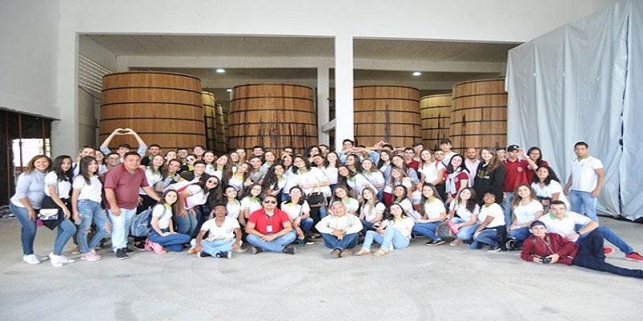
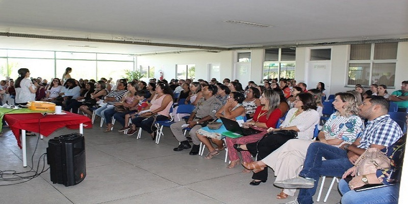
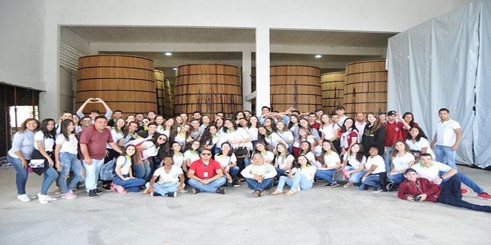
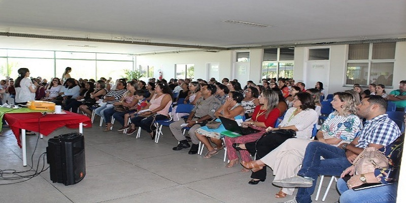
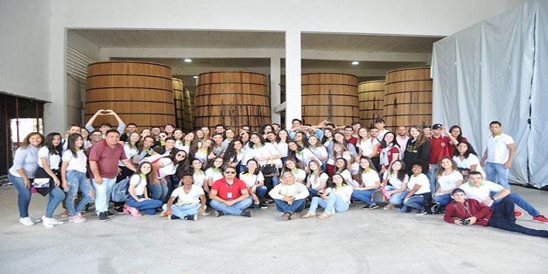
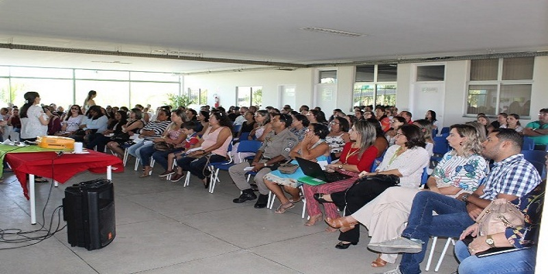
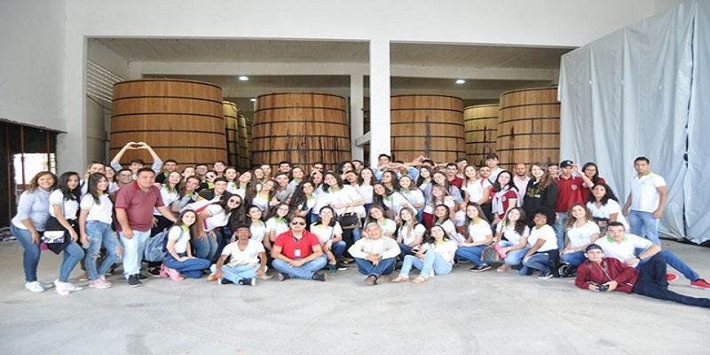
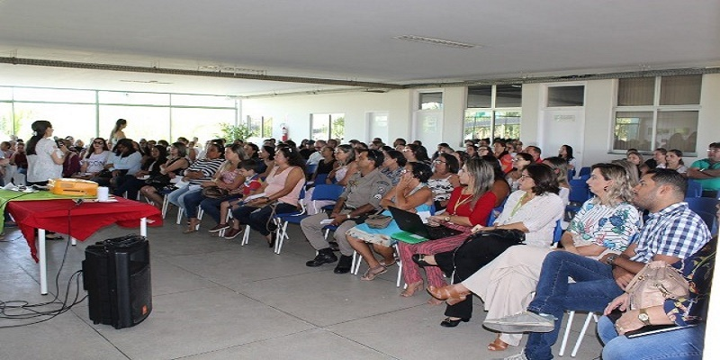

❝O Reitor do Instituto Federal de Educação, Ciência e Tecnologia da Paraíba, Professor Cícero Nicácio do Nascimento Lopes e o Diretor-Geral do IFPB Campus Patos, José Ronaldo de Lima, têm a honra de convidar Vossa Senhoria para participar da solenidade em comemoração ao aniversário de 10 anos do Campus IFPB na cidade de Patos. A comemoração ocorrerá ao longo do dia 11 de setembro de 2019.❞